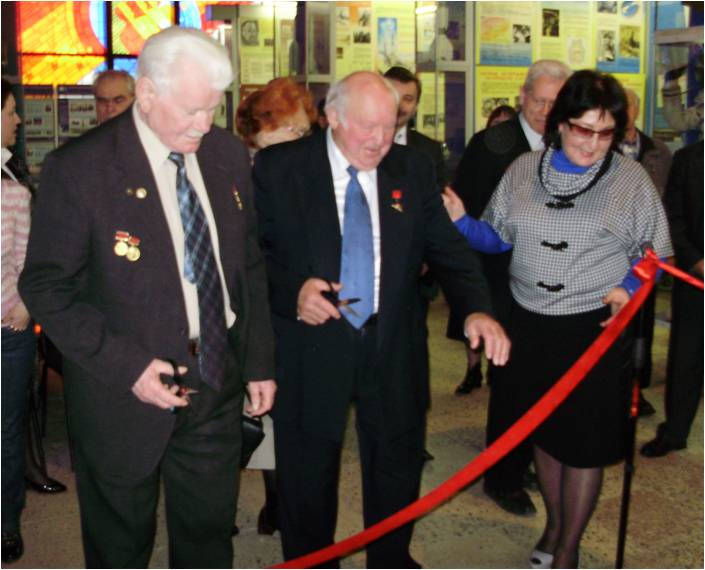
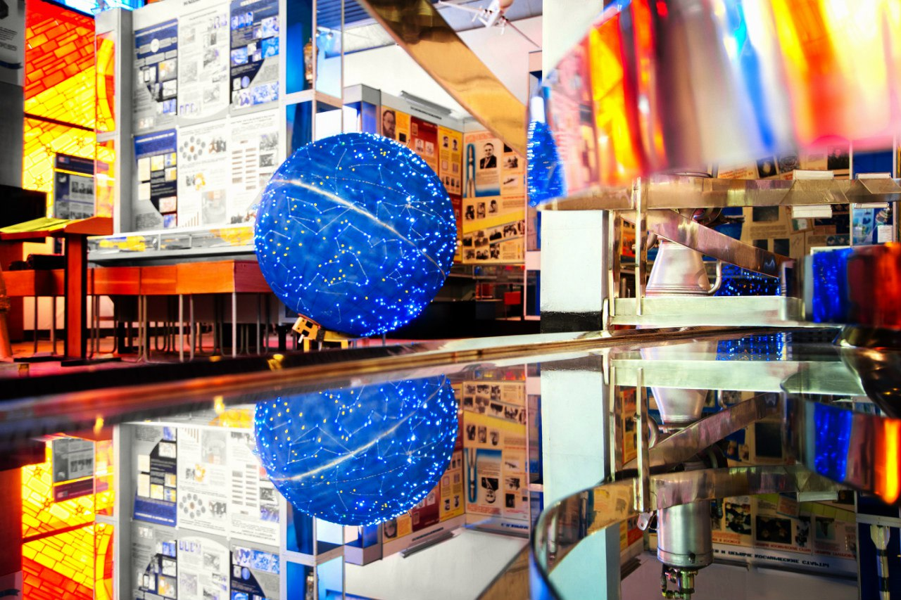
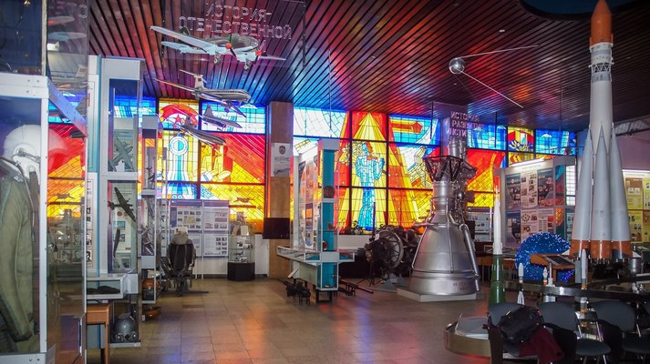
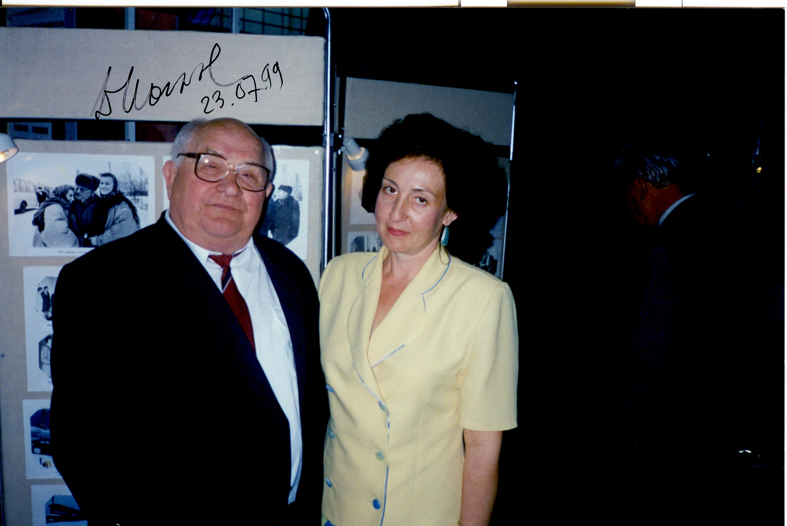

О музее
Музей авиации и космонавтики Самарского университета имени С.П.Королёва входит в число ведущих авиакосмических музеев России и уникальных объектов высшей школы. Основан в 1975 году (начало проектирования экспозиции), открыт в 1977 году. Одной из главных художественных особенностей музея стал витраж «Путь к звездам», автор - заслуженный художник РСФСР В. Петров. На фронтоне музея расположены панно и горельеф академика С.П. Королёва, выполненные членом союза художников СССР А. Головниным.
В 1989 году музею было присвоено почетное звание «Народный музей». В 1992 году была проведена реэкспозиция музея (экспозиционно-выставочный зал истории авиации и космонавтики). В 2015 году создан экспозиционно-выставочный зал истории университета.
В составе фондов музея - изделия, агрегаты и приборы авиакосмической техники; научные разработки сотрудников университета; модели и макеты авиационной и ракетно-космической техники; фотодокументальные материалы; редкие и уникальные издания; труды ученых университета; фотоархив и видеофонд.
Наиболее ценными коллекциями музея являются:
- Изделия и агрегаты авиационной и ракетно-космической техники, созданные в Самаре;
- Уникальные исторические документы конца Х1Х - начала ХХ века: литографии по истории воздухоплавания (Англия), учебные и популярные издания по авиации и воздухоплаванию (Германия), первые российские издания по авиации, коллекции фотографий и открыток начала ХХ века;
- Коллекция автографов (в том числе письма и документы) выдающихся ученых и конструкторов авиакосмической техники и космонавтов;
- Рекордные дела советских космонавтов 60-70 годов ХХ века, включая дипломы Международной аэронавтической федерации.
- Фотоархив по истории отечественной авиации и космонавтики, включая материалы из архивов фотохроники ТАСС и государственного архива кинофотодокументов 50-80-х годов ХХ века;
Видеофонд музея, включает более 300 российских и зарубежных видеофильмов авиационно-космической и др. тематики.
Музей проводит учебные занятия, лекции-демонстрации, обзорные и тематические экскурсии, организует выставки, конференции, конкурсы творческих работ, фестивали, концерты. При музее работает лекторий, молодежные клубы.
Научно-исследовательская деятельность музея связана с изучением этапов становления и развития Самарского авиационно-космического комплекса и Самарского университета, а также творческого наследия академика С.П. Королёва.
Музей работает в тесном сотрудничестве с ведущими предприятиями Самарского авиакосмического комплекса АО РКЦ «Прогресс», ПАО «Кузнецов» и другими; входит в состав ассоциации музеев вузов Самарской области; является научно-методическим центром и региональным отделением ассоциации музеев космонавтики Росиии (АМКОС), корпоративным членом Поволжского отделения Российской академии космонавтики имени К. Э. Циолковского, взаимодействует с Международным советом музеев (ICOM) и Международным комитетом по сохранению индустриального наследия (TICCIH), поддерживает контакты с зарубежными научно-техническими музеями, входящими в ассоциацию CIMUSET.
